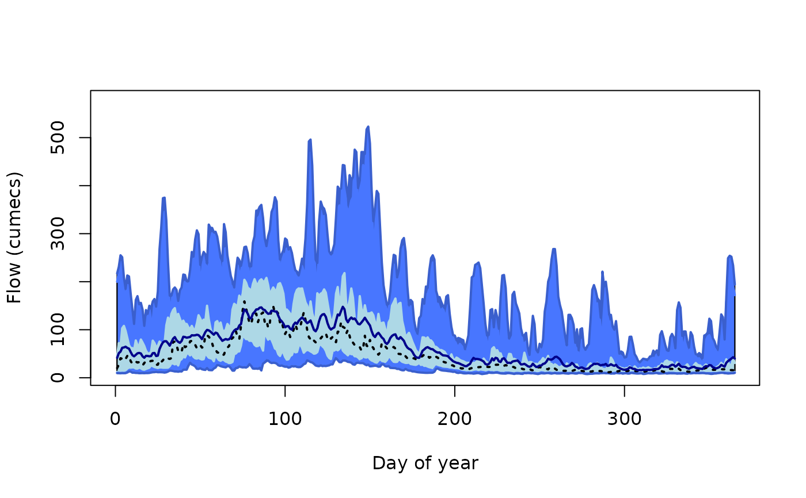

Daily statistics for imported data
Usage
dayStats(
x,
methods = c("mean", "median", "min", "max"),
percentiles = c(5, 25, 75, 95),
hydroDay = TRUE,
plot = TRUE,
...
)
# S3 method for class 'data.table'
dayStats(
x = NULL,
methods = c("mean", "median", "min", "max"),
percentiles = c(5, 25, 75, 95),
hydroDay = TRUE,
plot = TRUE,
year = NULL,
...
)Examples
# Load data
data(bewdley)
# Calculate hydrological year
bewdley$hydroYearDay()
#> ℹ Calculating hydrological year and day
#> ✔ Calculating hydrological year and day [2.3s]
#>
# Calculate daily statistics
bewdley$dayStats(plot = TRUE)

#> Key: <dayYear>
#> dayYear Mean Median Min Max Perc5 Perc25 Perc75 Perc95
#> <num> <num> <num> <num> <num> <num> <num> <num> <num>
#> 1: 1 41.19031 20.20 9.64 217 10.3000 12.200 44.125 199.85
#> 2: 2 51.24923 27.10 9.44 231 10.2000 12.600 72.300 219.00
#> 3: 3 54.42089 40.65 9.26 255 9.8800 11.075 64.725 240.85
#> 4: 4 62.39057 39.45 9.62 251 10.1000 11.000 103.000 225.00
#> 5: 5 63.08780 35.45 9.49 209 9.9200 11.800 108.000 177.00
#> ---
#> 361: 361 34.76373 15.05 8.77 249 9.9700 10.800 31.900 195.70
#> 362: 362 37.16483 16.20 9.03 254 9.8000 11.400 26.825 252.00
#> 363: 363 39.97379 15.90 9.35 252 9.9815 11.000 26.225 244.85
#> 364: 364 42.79248 15.70 9.40 234 10.0000 12.400 40.600 191.85
#> 365: 365 40.03757 15.70 10.10 194 11.0000 11.900 30.700 172.00